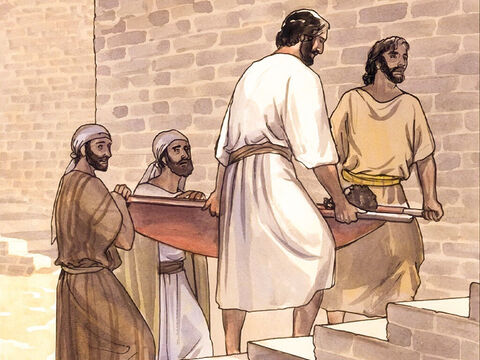

Lord Jesus Forgives And Heals A Paralyzed
And again he entered into Capernaum after some days; and it was noised that he was in the house.
And straightway many were gathered together, insomuch that there was no room to receive them, no, not so much as about the door: and he preached the word unto them.
And they come unto him, bringing one sick of the palsy, which was borne of four.
And when they could not come nigh unto him for the press, they uncovered the roof where he was: and when they had broken it up, they let down the bed wherein the sick of the palsy lay.
When Jesus saw their faith, he said unto the sick of the palsy, Son, thy sins be forgiven thee.
But there was certain of the scribes sitting there, and reasoning in their hearts,
Why doth this man thus speak blasphemies? who can forgive sins but God only?
And immediately when Jesus perceived in his spirit that they so reasoned within themselves, he said unto them, Why reason ye these things in your hearts?
Whether is it easier to say to the sick of the palsy, Thy sins be forgiven thee; or to say, Arise, and take up thy bed, and walk?
But that ye may know that the Son of man hath power on earth to forgive sins, (he saith to the sick of the palsy,)
I say unto thee, Arise, and take up thy bed, and go thy way into thine house.
And immediately he arose, took up the bed, and went forth before them all; insomuch that they were all amazed, and glorified God, saying, We never saw it on this fashion.
Mark 2:1-12

- 